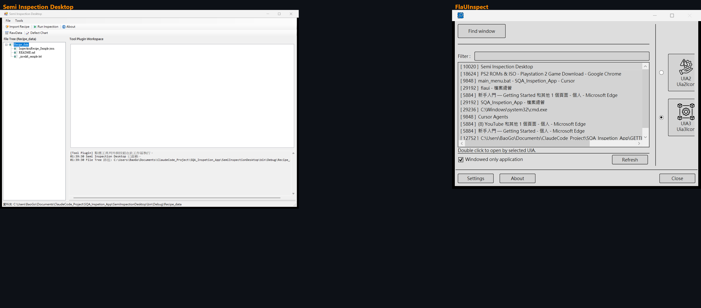
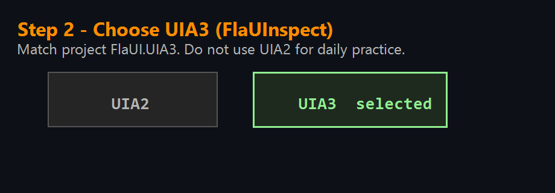
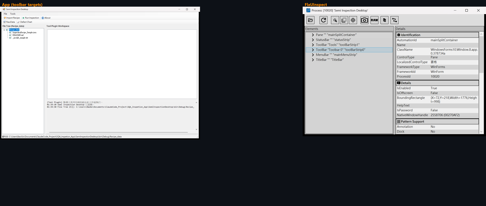
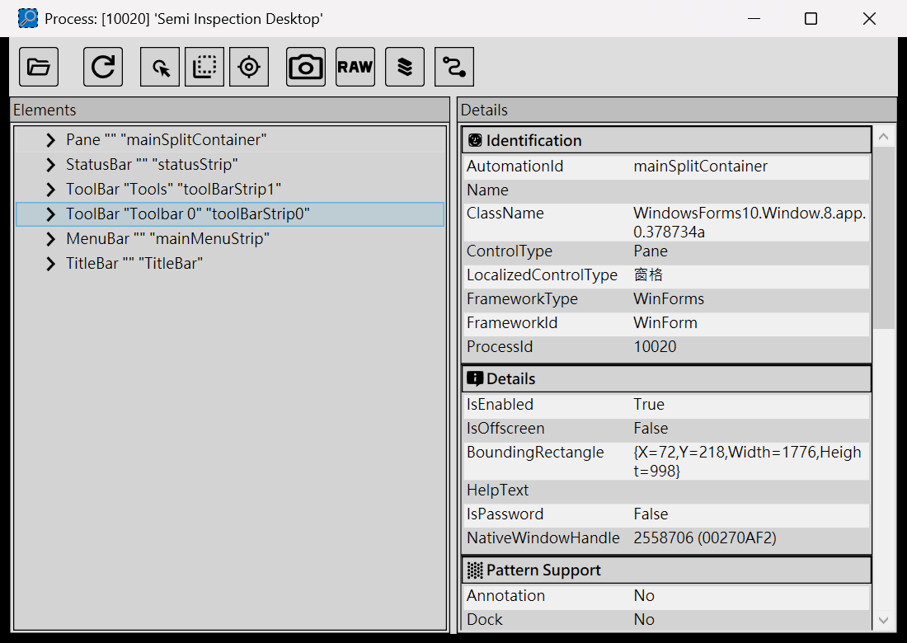
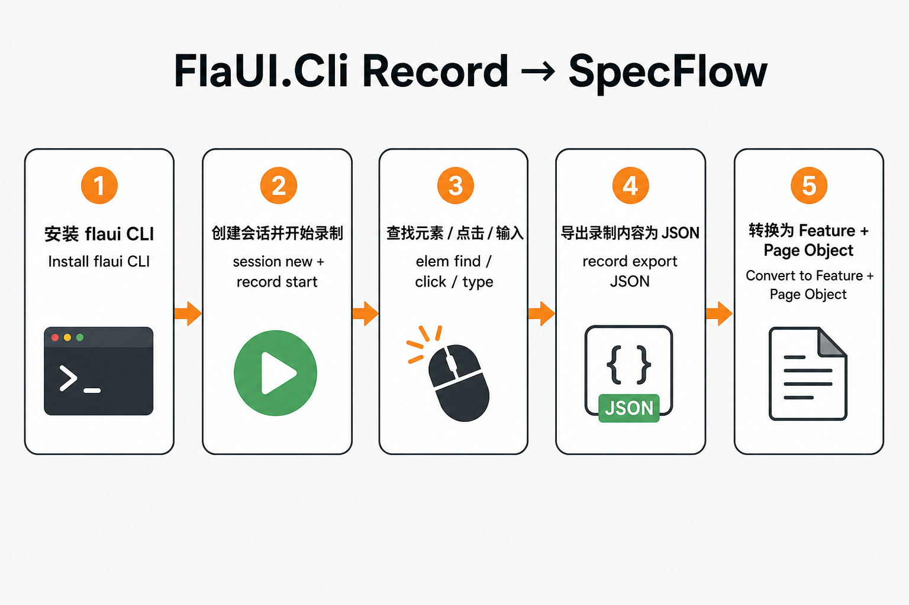
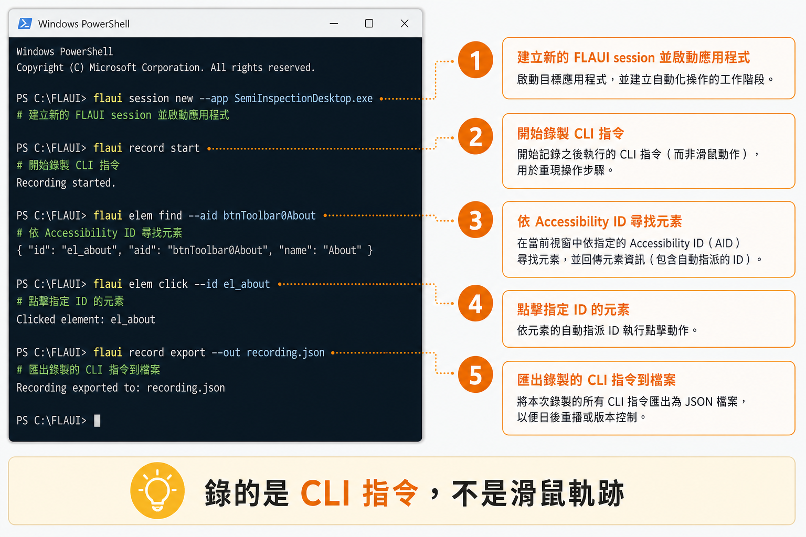
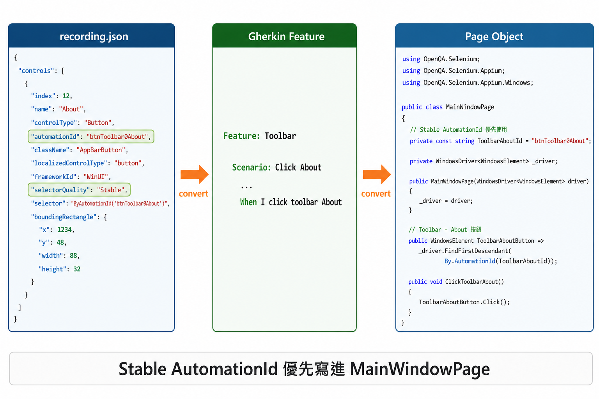

總覽
對齊 FlaUI Getting Started（UIA／Inspector／Find／Interact），範例全部使用
Semi Inspection Desktop 與本專案 TC01–TC10。
學完能做什麼： 用 FlaUInspect 讀出控制項屬性、對上本專案 Locator／Page Object，
並能跟著精講 TC（TC02→06→03→01）看懂 Feature → Steps → UI 操作。
規格怎麼變腳本見
第 1 章 ；本節專注
怎麼操控 WinForms 。
定位與對照
FlaUInspect
CLI 錄製
Locator
三層架構
TC 走讀
報告截圖
練習／反模式
1. FlaUI ↔ 本專案對照
FlaUI 是 .NET 桌面 UI 自動化框架（類似 Web 的 Selenium），底層為 Windows UI Automation。
本專案使用 FlaUI.UIA3 + SpecFlow + NUnit + Page Object。
官方／通用概念
本專案落點
Application / Window
Hooks/TestHooks.cs 啟動 SemiInspectionDesktop.exe
AutomationElement
工具列、File Tree、DataGrid、MessageBox、檔案對話框
Condition / Locator
BasePage：ByAutomationId / ByName…
Interact（Click／Keyboard）
MainWindowPage、WorkspacePage、FileDialogPage
FlaUInspect
選單 [15] 或
open_inspector.bat
FlaUI.Cli 錄製（免費）
選單 [16] 或
open_flaui_record.batCLI 錄製
失敗／步驟截圖
ActionScreenshotHelper →
TestResultReport.html
2. FlaUInspect 操作步驟（含圖）
只在 Windows 執行。安裝見
tools/README.md 。
自動開啟 App + FlaUInspect 並截圖： 雙擊
docs/assets/flaui/capture_inspect_shots.batdocs/assets/flaui/）。
只截 App 也可用
capture_tutorial_shots.bat
1 啟動 →
2 選 UIA3 →
3 確認 App →
4 Hover →
5 讀屬性 →
6 抄進 Page Object
啟動 FlaUInspect 與被測 App
雙擊 main_menu.bat[15] Open FlaUI Inspector
或直接執行
open_inspector.bat
腳本會：尋找 FlaUInspect →（若需要）啟動
SemiInspectionDesktop.exe → 開啟 Inspector

自動截圖：左側被測 App、右側 FlaUInspect（
capture_inspect_shots.bat）。
選擇 UIA3（務必）
FlaUInspect 啟動／設定畫面選 UIA3
本專案測試用 FlaUI.UIA3；選 UIA2 會與實際自動化不一致
UIA2 僅在舊系統找不到節點時作 fallback，日常練習不要混用

請在 FlaUInspect 選 UIA3 （與專案 FlaUI.UIA3 一致）。
確認 Semi Inspection Desktop 已開啟
視窗標題應為 Semi Inspection Desktop
若沒開：選單 [4] Start Inspection App
核對左側 File Tree 出現 Recipe_data（沒有的話先確認測試資料目錄）
真實 App 畫面（來自測試報告步驟圖）：工具列＋ File Tree。
Inspector Hover 時請對準工具列按鈕或樹節點。
開啟 Hover Mode 並懸停控制項
在 FlaUInspect 開啟 Hover Mode （或「跟隨滑鼠」）
把滑鼠移到 App 的目標控制項（建議先練 Import Recipe ）
左側元素樹應自動高亮對應節點；確認類型為 Button／TreeItem 等，而非整塊父容器

對照練習：左為 App 工具列目標、右為 FlaUInspect。
請在 Inspector 開啟 Hover Mode，懸停 Import Recipe 等控制項。
讀出並記錄屬性（抄到筆記／Page Object）
在屬性面板依序記下：
屬性
用途
Import Recipe 範例
Name顯示文字、Tree 項名
Import Recipe
AutomationId ★最穩定位（優先）
btnImportRecipe
ControlTypeButton / Tree / Edit…
Button
ClassNameWinForms 輔助判斷
WindowsForms10.BUTTON…

FlaUInspect 主視窗。在屬性面板記下 Name / AutomationId / ControlType / ClassName。
// Page Object 常見寫法（對上 AutomationId）
var button = window.FindFirstDescendant(
cf => cf.ByAutomationId("btnImportRecipe"));
button?.Click();
必練控制項清單（依序 Hover）
把實際讀到的值填進「實測」欄（練習用）。建議順序如下：
畫面上的目標
預期 AutomationId／Name
本專案誰在用
對照圖
Import Recipe
btnImportRecipeMainWindowPage（Ctrl+I）主視窗工具列
About
btnToolbar0AboutMainWindowPage / MessageBoxPage主視窗工具列
RawData
btnParametersMainWindowPage（Ctrl+E）03_rawdata_grid.png
Defect Chart
btnDefectChartMainWindowPage（Ctrl+D）— 作業 1 主視窗工具列
File Tree 檔名節點
Name 含 InspectionRecipe_Sample.json
WorkspacePage.DoubleClickTreeItem01_…filetree.png
Log 區
txtToolLogWorkspacePage.LogContains主視窗下方
開啟檔案對話框「檔名」欄
AutomationId 1148
FileDialogPage02_import_…png
對照：Import Recipe 開啟後的檔案對話框。Hover 時改選對話框視窗節點，
再找檔名欄（常見 AutomationId 1148）。
常見踩坑
Hover 抓到父容器而不是按鈕 → 再靠近圖示中心，或從樹展開選到 Button 節點。
找不到 AutomationId → WinForms 可能只用 Name；本專案
FindWinFormsControl 會兩邊都試。
對話框出現後主視窗被擋住 → Inspector 先選對話框視窗，再 Hover 檔名欄／OK。
選成 UIA2 → 樹內容可能與測試不符；請回到步驟 2 改 UIA3。
練完後：打開
TC 走讀 ，用
[2] Run single test
跑
TC02／
TC06，對照報告截圖。
3. FlaUI.Cli 錄製 → SpecFlow（圖文）
與 TestComplete 的差異： FlaUI 本體
沒有 滑鼠軌跡錄製。
免費工具
FlaUI.Cli
（NuGet：
FlaUI.Tool）錄的是你在終端下的
elem find / click / type 指令，匯出 JSON 後再整理成 BDD。
適合加速找定位子與草稿 Scenario，
不是 一鍵產生可維護測試。

總覽：安裝 → session／record → CLI 操作 → 匯出 JSON → 轉成 Feature／Page Object。
1 安裝 →
2 session →
3 record + elem →
4 export →
5 轉 BDD →
6 併入 Page Object
安裝 FlaUI.Tool（需 .NET SDK 10+）
本機若只有 .NET 8／9，先安裝 SDK 10：
winget install Microsoft.DotNet.SDK.10
執行
tools\install-flaui-cli.ps1flaui）
新開終端，確認：flaui --help
cd Automation_testcase\Project_FlaUIBDD\Testcase_Inspection_App_FlaUI_BDD\tools
.\install-flaui-cli.ps1
flaui --help
一鍵引導錄製（推薦）
先建置 App：主選單 [5]
主選單 [16] 或雙擊
open_flaui_record.bat
選情境：About （對應 TC06）、RawData、Import、或 Custom
腳本會：啟動 App → record start → 下 CLI 操作 →
record export → 產生 Feature／Page stub
產出路徑：
tools\recordings\session_yyyyMMdd_HHmmss\
（含 recording.json、截圖、stub）。
手動 CLI 指令（與引導腳本相同）

在終端下指令；錄製內容是這些 CLI 步驟，不是你在 App 上的滑鼠移動。
flaui session new --app "SemiInspectionDesktop\bin\Debug\SemiInspectionDesktop.exe" --wait-title "Semi Inspection"
flaui record start
flaui elem find --aid "btnToolbar0About"
flaui elem click --id <上一步回傳的 id>
flaui screenshot --output about.png
flaui record stop
flaui record export --out recording.json
flaui audit --recording
flaui session end
JSON → SpecFlow／Page Object stub

Stable 的 AutomationId 優先寫進既有 Page Object；Gherkin 對齊
Inspection_App.feature 既有步驟用語。
轉換腳本（範例 JSON 可先練）：
cd Automation_testcase\Project_FlaUIBDD\Testcase_Inspection_App_FlaUI_BDD\tools
.\Convert-FlaUIRecordToBdd.ps1 `
-InputJson .\samples\tc06_about_record.json `
-OutDir .\samples `
-ScenarioName About
會產生：
About_stub.feature — 草稿 ScenarioAbout_PageStub.cs — Find／Click 草稿（勿直接當正式碼）About_mapping.md — 步驟對照表
合併規則：
只採用 selectorQuality = Stable（或 Acceptable 且有明確 Name）
UI 操作放進 MainWindowPage／MessageBoxPage 等，不要塞進 Steps
能複用既有 Given／When／Then 就不要新造同義步驟
用選單 [2] 跑對應 TC 驗證，再對照報告截圖
與 FlaUInspect 怎麼搭配
工具
適合
不適合
FlaUInspect [15]
肉眼 Hover、抄 AutomationId、除錯找不到元素
自動產出一連串操作步驟
FlaUI.Cli [16]
用指令探索 UI、錄步驟、匯出 JSON、評分 selector
像 TestComplete 那樣「點一下就錄滑鼠」
建議流程：Inspect 確認 ID → CLI 錄一條路徑 → stub 合併進 BDD →
dotnet test／主選單跑測。
4. Locator 與操作速查
方法
說明
優先級
ByAutomationId最穩定、少受語系影響
★★★★★
ByName顯示文字／Tree 項名
★★★
ByClassName例如 DataGridView
★★
ByControlType類型過濾，通常搭配其他條件
★
公司慣例： 工具列優先試快捷鍵 （如 Ctrl+I Import），失敗再依 AutomationId 點擊。
// 短片段：依 AutomationId 找按鈕並點擊
var button = window.FindFirstDescendant(cf => cf.ByAutomationId("btnImportRecipe"));
button?.Click();
// 等待元素（避免寫死過長 Sleep）
var el = Retry.WhileNull(
() => window.FindFirstDescendant(cf => cf.ByAutomationId("txtToolLog")),
TimeSpan.FromSeconds(10)
).Result;
5. Feature → Steps → PageObject
Inspection_App.feature ← Gherkin：人讀的場景
↓
Inspection_AppSteps.cs ← 對齊 Given/When/Then（編排＋Assert）
↓
PageObjects/*.cs ← 真正的 FlaUI 找元素／點擊／輸入
↓
ActionScreenshotHelper ← 步驟圖寫進 TestResultReport
規範： 不要在 Step Definitions 裡直接 FindFirstDescendant。
UI 操作集中在 Page Object，Steps 只呼叫 Page 方法並做斷言。
6. TC 實戰走讀
建議精讀順序與初學路徑一致：TC02 → TC06 → TC03 → TC01 。
Feature 原文：
Inspection_App.feature 。
單跑：選單 [2] 輸入例如 TC02。
精講 TC02 — File Tree shows Recipe_data目標： 啟動後驗證主視窗標題、檔案樹可見、Recipe_data 含範例 JSON。
Then the main window title should be "Semi Inspection Desktop"
And the file tree should be visible
And Recipe_data should contain "InspectionRecipe_Sample.json"
對照點：左樹根節點 Recipe_data 與
InspectionRecipe_Sample.json。FlaUI 用 Name／Tree 遍歷驗證。
短片段： Steps 呼叫 Workspace 檢查可見性；完整實作見
WorkspacePage 與附錄。
踩坑：App 未含測試資料時樹是空的 → 先確認
Recipe_data/ 有範例檔，或依賴 TC01／Given「test data is ready」。
精講 TC06 — About dialog目標： 點 About、關閉訊息框（MessageBox）。入門對話框控管。
When I click toolbar "About"
And I close the message dialog
截圖： 報告若跑過 TC06，步驟圖會有 About 彈窗與點 OK。
立刻取得：選單 [2] → TC06 → [6] Open test report。
關鍵頁面： MainWindowPage（開 About）＋
MessageBoxPage（關對話框）。
踩坑：對話框搶焦點失敗時 Enter／找 OK 按鈕會 timeout —
Hooks／DialogHelper 有前景視窗處理，勿在 Step 硬 Sleep。
精講 TC03 — RawData parameter table目標： 點 RawData，確認參數表可見、Log 含 "RawData"。
When I click toolbar "RawData"
Then the data table should be visible
And the log should contain "RawData"
右側 RawData 表格（Category / Parameter / Value）。
斷言常查表格可見＋ txtToolLog 文字。
// Steps 短片段
Main.ClickToolbar("RawData");
ClassicAssert.IsTrue(Workspace.IsGridVisible());
踩坑：未載入任何 Recipe 時表格可能空白但仍「可見」—
與 TC08／TC09 負面案例區分清楚。
精講 TC01 — Import Recipe to Recipe_data目標： Import Recipe → 檔案對話框選 JSON → 切 RawData →
驗證樹／表格參數／Log。Feature 使用 Scenario Outline + Examples（DDT） 。
When I click toolbar "Import Recipe"
And I select file "<recipe_file>" in the file dialog
And I click toolbar "RawData"
Then Recipe_data should contain "<recipe_file>"
And the RawData parameter table should contain "<expected_parameter>"
檔案對話框標題「Import Recipe」。Page Object 找檔名欄（AutomationId
1148）輸入完整路徑後確認開啟。
匯入成功後：可驗證例如 Layer1_AOI_Recipe_v1、
W-20260605-001、Brightfield（Examples 列）。
// FileDialog 概念短片段
var path = Path.Combine(ConfigHelper.GetRecipeDataDirectory(), fileName);
FileDialog.OpenFile(path);
踩坑：對話框未前景、路徑含空格、或選到
_invalid_sample.txt（那是 TC07）。優先看報告步驟圖對照哪一步斷掉。
其餘 TC（短卡）
TC05 — 雙擊檔案樹開啟 Recipe（★★）
WorkspacePage.DoubleClickTreeItem；Name 模糊比對。
若表格未出可再點 RawData 當 fallback。
TC04 / TC10 — Defect Chart／Run Inspection（★★★）
多步驟工具列＋ Log assert（"Defect Chart" / "Run Inspection"）。
快捷鍵 Ctrl+D / Ctrl+R。
TC07–TC09 — 負面案例（★★）
TC07 無效副檔名；TC08 無資料繪圖；TC09 開不存在檔。重點：主視窗仍存活、錯誤可關閉、檔案未被誤拷貝。
7. 報告截圖怎麼用
點擊／場景結束會由 ActionScreenshotHelper 擷圖並寫入報告（可設定於 App.config）。
開啟：選單 [6] →
TestResultReport.html
（可點縮圖放大）。
本頁教材圖來自報告步驟截圖，整理於 docs/assets/flaui/。
重新產生：跑對應 TC 後從報告另存，或覆寫同名 PNG。
讀報告細節見 第 5 章 。
8. 練習作業與反模式
用 FlaUInspect 找出 Defect Chart 的 AutomationId，對照上表是否為
btnDefectChart。
選單 [2] 只跑 TC06，打開報告比對 About／關閉步驟圖。
跑一次 Convert-FlaUIRecordToBdd.ps1 對
tools\samples\tc06_about_record.json，讀
About_mapping.md，對照正式 MainWindowPage／TC06。
（進階）安裝 FlaUI.Tool 後用 [16] 錄 About，把 Stable 的 aid 核對是否為
btnToolbar0About。
（進階）故意改錯一句 Then 文字再跑，觀察失敗步驟的截圖差異，改回後確認綠燈。
反模式（不要做）
在 Step 直接寫大量 FlaUI Find／Click
過長 Thread.Sleep 取代 Retry／輪詢等待
忽略 null、寫死本機絕對路徑
Locator 一開始就用 ControlType 掃全樹